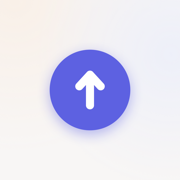

Post to VaultPrivacy Policy
Post to Vault ("Post") does not collect, store or share any personal information.
Your notes
Everything you write, say or photograph in Post is saved as files in a folder you choose on your device, such as an Obsidian vault in iCloud Drive. Those files belong to you and stay wherever that folder is kept. Post has no servers and no account system, and the developer cannot see your notes.
Dictation
Speech is transcribed on your device by Apple's speech recognition. Post does not send recordings anywhere.
Camera and photos
Photos you take or choose are saved into your folder. When you take a photo, Post can also save the full-resolution original to your photo library.
Links
When you paste a link, Post asks that website for the page's title, the same request a browser makes. Nothing else is sent with it.
Analytics and tracking
None. Post contains no analytics, advertising or tracking code, and no third-party software that collects data.
Contact
Questions about this policy: post@grevedesign.com.